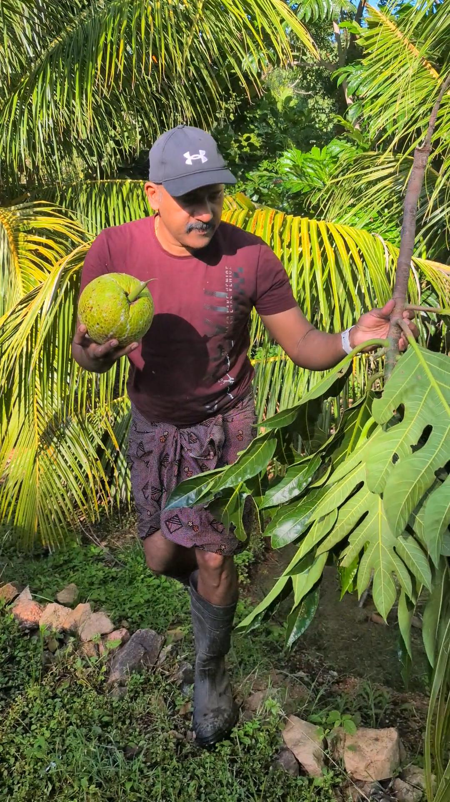

New
ഓസ്ട്രേലിയയിൽ മുരിങ്ങ നിരോധിച്ചതിൻ്റെ കാരണം അറിയണോ?
ഓസ്ട്രേലിയയിൽ ഇനി മുതൽ മുരിങ്ങ പ്രോഡക്ട്സുകൾ ഫുഡ് ഐറ്റം ആയോ ഫുഡ് ingredient ആയോ വിൽക്കാൻ സാധിക്കുകയില്ല.
Welcome to Australian Jeevitham — a unique digital series documenting the authentic, everyday experiences of life, travel, and backyard farming in Australia, presented in Malayalam. ഓസ്ട്രേലിയയിലെ ഒരു സാദാരണ മലയാളിയുടെ ജീവിതം എന്താണ് എന്ന് ഈ ചാനലിലൂടെ നിങ്ങൾക്ക് കാണിച്ചു തരുന്നു. കൃഷിയെ ഇഷ്ടപെടുന്ന ഞാൻ എൻ്റെ ജോലി സമയം കഴിഞ്ഞു ഉണ്ടാക്കിയ ചെറിയ ഒരു അടുക്കള തോട്ടം ആണ് എൻ്റെ വീഡിയോയുടെ ഉള്ളടക്കം. പിന്നെ ഓസ്ട്രേലിയയിലെ ജോലികളെപ്പറ്റിയും, എങ്ങനെ ഓസ്ട്രേലിയയിൽ വരാൻ സാധിക്കും എന്നതിനെപ്പറ്റിയും ഇടക്കിടക്ക് വീഡിയോ ഇടാറുണ്ട്.
▶ Watch on YouTube ▶ Watch on Instagram
Australian Jeevitham (ഓസ്ട്രേലിയൻ ജീവിതം) was created to answer that exact question.
Based in sunny Queensland, Australia, this channel offers a front-row seat to the beautiful, humorous, and sometimes challenging realities of navigating an immigrant life. From the peaceful rhythm of backyard farming and growing familiar crops in tropical soil, to exploring breathtaking Australian landscapes and wild terrains, the series brings a piece of Australia straight to the global Malayalam-speaking community.

Backyard harvest dayഓസ്ട്രേലിയയിൽ ഇനി മുതൽ മുരിങ്ങ പ്രോഡക്ട്സുകൾ ഫുഡ് ഐറ്റം ആയോ ഫുഡ് ingredient ആയോ വിൽക്കാൻ സാധിക്കുകയില്ല.
ഓസ്ട്രേലിയയിലെ കേരള സ്റ്റൈൽ കൃഷിത്തോട്ടം
വെറുതെ ഒരു രസത്തിനു ട്രൈ ചെയ്തതാണ്.
Government job boards for every state and territory, plus SEEK for the private sector.
Visa routes, personal experience, and where to find a MARA-registered migration agent.
From the Great Barrier Reef to Uluru — where to go on a weekend off.